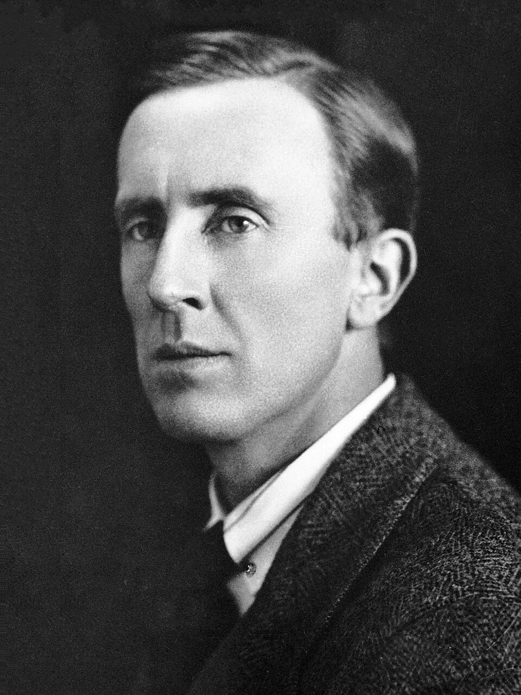
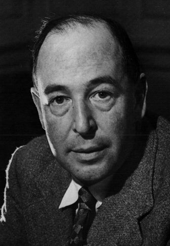
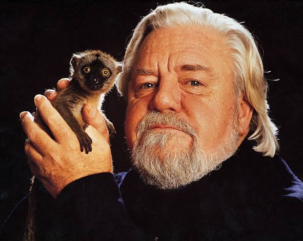

Добро пожаловать в мой блог о книгах
Это мои любимые авторы и произведения.
Джон Ро́нальд Ру́эл «Дж. Р. Р.» То́лкин
Британский писатель, поэт, переводчик, лингвист и филолог. Ветеран Первой мировой войны. Один из самых известных писателей XX века, автор более двухсот различных публикаций (37 книг, 63 статьи, 121 перевод) и множества незавершённых работ.

Клайв Стейплз Лью́ис
Британский писатель, поэт, филолог и теолог ирландского происхождения. Наиболее известен своими произведениями в жанре фэнтези, среди которых «Хроники Нарнии», «Космическая трилогия», а также книгами по христианской апологетике, такими как «Письма Баламута», «Просто христианство», «Чудо», «Страдание». Один из наиболее выдающихся британских культурных деятелей XX века.

Дже́ральд Ма́лькольм Да́ррелл
Британский натуралист, писатель, основатель Джерсийского зоопарка и Фонда охраны дикой природы, который носит его имя. Младший брат писателя Лоренса Даррелла (1912—1990).
